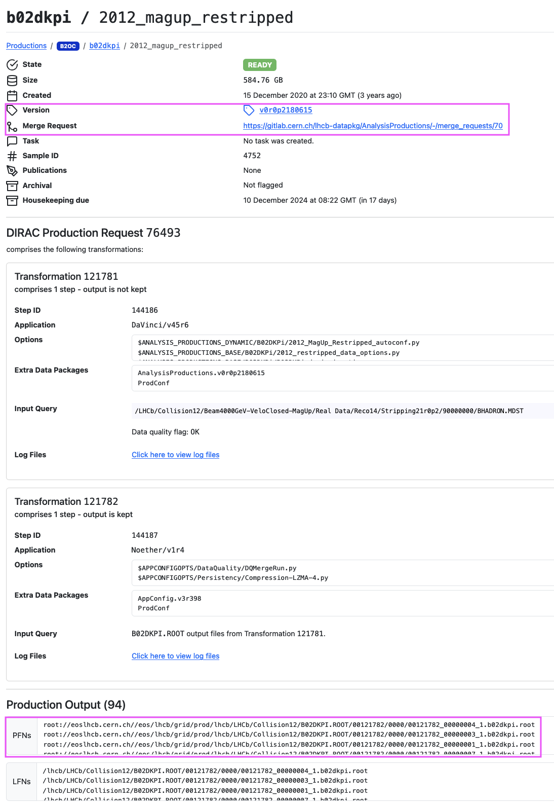
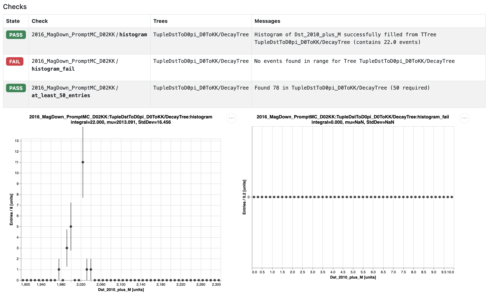

Analysis Productions
Learning Objectives
Understand the reasons to use Analysis Productions
Look at some pre-existing productions
Create your own production
Running DaVinci locally can be great for testing an options file, but is rarely appropriate for creating the full set of ROOT ntuples needed for an analysis. Historically, people would submit their jobs to the grid: one can send off a large number of DaVinci jobs to be handled by batch computing resources (in certain cases, this is still useful - see the next lesson for how to do this). However, this still has some drawbacks, in particular:
Large datasets (especially in run 3) would require a long period of monitoring your grid jobs.
Computing resources can be wasted if multiple analyses are independently producing similar ntuples.
Ntuples can be lost, or removed when analysts leave, which can be an issue for analysis preservation.
It is the goal of Analysis Productions to centralise and automate much of the process of making ntuples, and to keep a record of how datasets were produced. Moving into run 3, this will usually be the preferred way to create ntuples for your analysis.
Monitoring productions
Before we get into the how-to, let’s first take a look at the end result of a real production. Open the Analysis Productions webpage, and navigate to Productions. You should see a new menu appear, showing a list of productions. Using the search bar on the right you can search for any production of interest, try b02dkpi for example. This should return one result and clicking on it should show you a table of jobs belonging to the production.
Each row in the table corresponds to a job belonging to this production, and displays:
Its status (e.g. READY, ACTIVE)
Some of its tags (e.g. MC/DATA, Run1/Run2)
Its name (e.g. 2018_15164022_magup)
When it was created and last updated
The version of the code used to run it
To view more information about any one of these jobs, you can click on it to view a job summary page. The image below shows one such page, with a couple of particularly useful elements highlighted in magenta.

The top section shows a summary of important information, such as the state of the job, its production version, the total storage required for the output files and the merge request and JIRA task used to submit the production. To view the input scripts used to set up the production click the link to the merge request. The next section lists the tags used to categorise the job and the third section lists the DIRAC production information for the job. Finally, is the Files section which lists the output files for the job. One can use either the PFNs or LFNs to access the output, the PFNs should be visible to all systems with access to the CVMFS.
Let’s try accessing one of these files right now by doing:
root -l root://eoslhcb.cern.ch//eos/lhcb/grid/prod/lhcb/MC/2018/B02DKPI.ROOT/00145105/0000/00145105_00000001_1.b02dkpi.root
You can now explore this file by doing TBrowser b inside of ROOT (or with another method of your choice).
Creating your own production
For practice, we will now go through the steps of creating a simple production. For details about more advanced usage, see the Analysis Productions documentation.
Start by creating a folder to work in, and into it clone the Analysis Productions repository.
git clone ssh://git@gitlab.cern.ch:7999/lhcb-datapkg/AnalysisProductions.git
cd AnalysisProductions
Before making any edits, you should create a branch for your changes, and switch to it:
git checkout -b ${USER}/starterkit-practice
Now we need to create a folder to store all the things we’re going to add for our new production. For this practice production, we’ll continue with the \(` D^{0} \to K^{-}K^{+} `\) decays used in the previous few lessons, so we should name the folder appropriately:
mkdir D02HH_Practice
Let’s enter that new directory (cd D02HH_Practice), and start adding the files we’ll need. First is the DaVinci options file. If you have the options file you created during the previous lessons, copy it here, and open it with your text editor of choice. There are a couple of things to change - first, you can remove the lines about using the local input data (that’s everything to do with IOHelper()), since we’re going to be using remotely hosted data instead. Also, because the Analysis Productions system is able to automatically configure parts of jobs, you can also remove these lines:
DaVinci().InputType = "DST"
DaVinci().TupleFile = "DVntuple.root"
DaVinci().PrintFreq = 1000
DaVinci().DataType = "2016"
DaVinci().Simulation = True
DaVinci().Lumi = not DaVinci().Simulation
DaVinci().EvtMax = -1
DaVinci().CondDBtag = "sim-20170721-2-vc-md100"
DaVinci().DDDBtag = "dddb-20170721-3"
from GaudiConf import IOHelper
IOHelper().inputFiles([
"./00070793_00000001_7.AllStreams.dst"
], clear=True)
If you don’t have your options file from earlier available, or are having trouble, you can use this options file.
The next file needed is a .yaml file, which will be used to configure the jobs. Create a new file named info.yaml, and add the following to it:
defaults:
application: DaVinci/v46r4
wg: Charm
automatically_configure: yes
turbo: no
inform:
- your.email.here@cern.ch
options:
- ntuple_options.py
output: D02KK.ROOT
2016_MagDown_PromptMC_D02KK:
input:
bk_query: "/MC/2016/Beam6500GeV-2016-MagDown-Nu1.6-25ns-Pythia8/Sim09c/Trig0x6138160F/Reco16/Turbo03/Stripping28r1NoPrescalingFlagged/27163002/ALLSTREAMS.DST"
Here, the unindented lines are the names of jobs (although defaults has a special function), and the indented lines are the options we’re applying to those jobs. Using this file will create one job called 2016_MagDown_PromptMC_D02KK, that will read in data from the provided bookkeeping path. All the options applied under defaults are automatically applied to all other jobs - very useful for avoiding repetition. The options we’re using here are:
application: the version of DaVinci to use. Here we choose v46r4, the latest for Run 2 at the time of writing (see here to check what versions are available).
wg: the working group this production is a part of. Since this is a \(` D^{0} \to K^{-}K^{+} `\) decay, we’ll set this to
Charm.inform: optionally, you can enter your email address to receive updates on the status of your jobs.
automatically_configure: setting this to
yesis what allowed us to remove all of those configuration lines from the options file. This is very useful when creating productions that use multiple years, or both data and MC.turbo: Setting this to
yesindicatesautomatically_configureshould configure the application for reading turbo data.options: the list of options files to use. Behind the scenes, these will get passed to DaVinci.
output: the name of the output
.rootntuples. These will get registered in bookkeeping as well.input: the bookkeeping path of the data you’re running over. This is what you located during the bookkeeping lesson, and is unique to the 2016 magnet-down job, so it doesn’t belong under
defaults.
For a full list of the available options, and information on their allowed values, see the documentation.
Add a magnet-up job
Currently, this will create ntuples for 2016 magnet-down MC data only. See if you can add to your info.yaml file to create a job for 2016 magnet-up data as well. Hint: the location of the correct .DST file can be found using bookkeeping.
Solutions
Since we’re making use of the defaults job name, we need to add very little to add this new job. One can simply copy the final 3 lines to create a new job, rename it to something like 2016_MagUp_PromptMC_D02KK, and add the appropriate bookkeeping path. An example of this can be found here.
For good practice, the final thing we should add is a README. This is a markdown file that will be used to document the information about your production in a more human-readable format. Create a file README.md, and add some pertinent information. If you’re not sure what to add, try looking at some existing productions to get an idea.
Testing your production locally
Now we’ve got both of the files we need, we should test the production to make sure it works as expected. All of this will be done using the lb-ap command. Navigate up one level to the base directory of the repository (AnalysisProductions), and run lb-ap, which should display the following:
Usage: lb-ap [OPTIONS] COMMAND [ARGS]...
Command line tool for the LHCb AnalysisProductions
Options:
--version
--help Show this message and exit.
Commands:
login Login to the Analysis Productions API
versions List the available tags of the Analysis Productions...
clone Clone the AnalysisProductions repository and do lb-ap...
checkout Clean out the current copy of the specified production and...
list List the available production folders by running 'lb-ap list'
list-checks List the checks for a specific production by running lb-ap...
render Render the info.yaml for a given production
validate Validate the configuration for a given production
test Execute a job locally
check Run checks for a production
ci-checks Helper function for running checks in the CI.
debug Start an interactive session inside the job's environment
reproduce Reproduce an existing online test locally
parse-log Read a Gaudi log file and extract information
This command lb-ap will allow us to perform a number of different tests. Let’s start with lb-ap list, which will display all of the productions. Hopefully you should see your new production (D02HH_Practice) on this list! You can also use this to list all of the jobs within a given production, by running lb-ap list D02HH_Practice. If you added a second job for magnet-up earlier, the output of this command should look like this:
The available jobs for D02HH_Practice are:
* 2016_MagDown_PromptMC_D02KK
* 2016_MagUp_PromptMC_D02KK
The most important test is if the production actually runs successfully, and creates the desired ntuples. The lb-ap command is used for this as well. To test the magnet-down job, run this command:
lb-ap test D02HH_Practice 2016_MagDown_PromptMC_D02KK
This will automatically run DaVinci, using the data and options files you specified in info.yaml. You should see the output from DaVinci similar to what you saw when you ran it manually in an earlier lesson, followed by a completion message that tells you the location of the output files created by the test.
You should find that a local-tests directory has been created, and inside it are a record of any local tests you’ve run. Navigate to the output folder of your test, and check what files have been created. There are assorted log files, as well as a .ROOT file called something like 00012345_00006789_1.CHARM_PROMPTMC_D02KK.ROOT.
Let’s open this .root file and check if everything worked correctly. Similar to what we did earlier, run root -l 00012345_00006789_1.CHARM_PROMPTMC_D02KK.ROOT to open ROOT with that ntuple loaded, and view the contents by running TBrowser b (or otherwise). Take a little time to look around, and make sure everything’s in order.
Useful resources
If you encounter problems while creating a real production, here are a few good places to ask for help:
For issues with options files, try the DaVinci Mattermost channel or the lhcb-davinci mailing list
For issues with info.yaml files, or anything else to do with the Analysis Productions framework, try the Analysis Productions Mattermost channel, or contact the Analysis Productions coordinator(s) (see here to find out who they are).
Creating a merge request
Now that we’ve tested all of our changes and are sure that everything’s working as intended, we can prepare to submit them to the main repository by creating a merge request. Start by commiting the changes:
git add ntuple_options.py
git add info.yaml
git add README.md
git commit -m "Add D02KK MC production for starterkit"
And then push the changes with
git push origin ${USER}/starterkit-practice
Once this has completed, it should give you a link to create a merge request for your new branch. Open it in a browser, and give it a suitable name & description - in the description, please make sure to say that this is part of the Starterkit lesson! For a real production please ensure you follow the instructions in the merge request description template. Then you can submit your merge request.
Since this is only for practice, your request won’t actually be merged, but some tests will still be run automatically. To view these, go to the Pipelines tab of your merge request, and open it by clicking the pipeline number (eg. “#1958388”). At the bottom, you will see a test job - click on this, and it will show you the output of the test jobs. These will take a little time to complete, so it may still be in progress. The first few lines should look something like:
Running with gitlab_runner_api 0.1.dev42+g457dbd5
INFO:Creating new pipeline for ID 1958388
ALWAYS:Results will be available at https://lhcb-analysis-productions.web.cern.ch/1958388/
You can open that link in your browser to view the status of the test jobs (example here). After a few minutes, these should have completed - all being well, you’ve now successfully submitted your first production!
Checks
For the start of Run 3 it was requested to add the Checks feature to AnalysisProductions. This facilitates offline monitoring by allowing automated simple analysis of tupling output to assist with data quality and early measurements. For now let’s stick with some simple ones but for full details you can check the documentation.
We start by defining the checks we would like to perform. Add the following to your info.yaml below the defaults:
checks:
histogram:
type: range
expression: Dst_2010_plus_M
limits:
min: 1900
max: 2300
blind_ranges:
min: 2000
max: 2020
histogram_fail:
type: range
expression: Dst_2010_plus_M
limits:
min: 0
max: 10
at_least_50_entries:
type: num_entries
tree_pattern: TupleDstToD0pi_D0ToKK/DecayTree
count: 50
Here we have defined two range checks and one num_entries check. range checks plot a histogram in the range shown for your desired expression, if empty they will fail your test. num_entries simply checks that your specified TTree has at least the number of events you desire.
Now that we have defined our checks we should choose which jobs to apply them to, if any check is not applied to at least one job the validation will fail!
2016_MagDown_PromptMC_D02KK:
input:
bk_query: "/MC/2016/Beam6500GeV-2016-MagDown-Nu1.6-25ns-Pythia8/Sim09c/Trig0x6138160F/Reco16/Turbo03/Stripping28r1NoPrescalingFlagged/27163002/ALLSTREAMS.DST"
checks:
- histogram
- histogram_fail
- at_least_50_entries
Now if we test 2016_MagDown_PromptMC_D02KK the checks will be run automatically and their results printed. If we push these changes to our remote branch then in the pipeline results we will find a summary of each check result and the plots of each histogram.

Did it fail?
The test will have failed due to the histogram check we defined to fail, remove that if you want your tests to pass.
Next steps for real productions
As mentioned earlier, your test productions for this lesson won’t be merged since this is only for practice purposes. If this were a real production, there would be some extra steps to take before merging.
You should try to reach out to anyone else who may also want to use these ntuples, and see if they’d like to add or change anything. This is usually done through your working group (either by email, or for new productions, by presenting at a WG meeting). For this, you can start by getting in touch with your WG conveners (see here to find out who they are).
In addition, the Analysis Productions coordinator(s) may also have some feedback on your additions/changes.